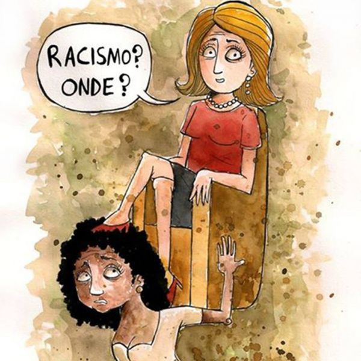
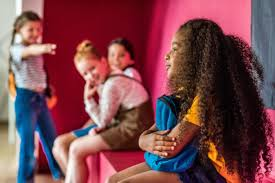
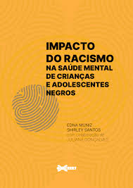
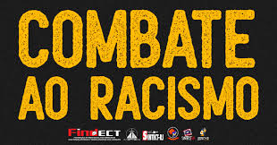

O que é Racismo Individual?
Racismo individual é a discriminação e preconceito manifestados por indivíduos contra outras pessoas com base na cor da pele ou características físicas. Esse tipo de racismo se manifesta através de atitudes, comportamentos e ações preconceituosas de uma pessoa contra outra.
Exemplos de Racismo Individual
- Insultos Raciais: Uso de termos pejorativos e ofensivos para se referir a pessoas de diferentes raças.
- Discriminação no Trabalho: Tratamento desigual de funcionários com base na raça.
- Preconceito em Espaços Públicos: Atitudes preconceituosas em locais como restaurantes, lojas e transportes públicos.
Impactos do Racismo Individual
O racismo individual pode causar danos psicológicos e emocionais às vítimas, afetando sua autoestima e bem-estar. Além disso, pode levar à exclusão social e limitar as oportunidades de educação e emprego.
Como Combater o Racismo Individual
Combater o racismo individual requer conscientização e educação. É importante promover a empatia, o respeito e a valorização da diversidade. Denunciar atitudes racistas e apoiar as vítimas também são passos fundamentais para combater esse tipo de preconceito.